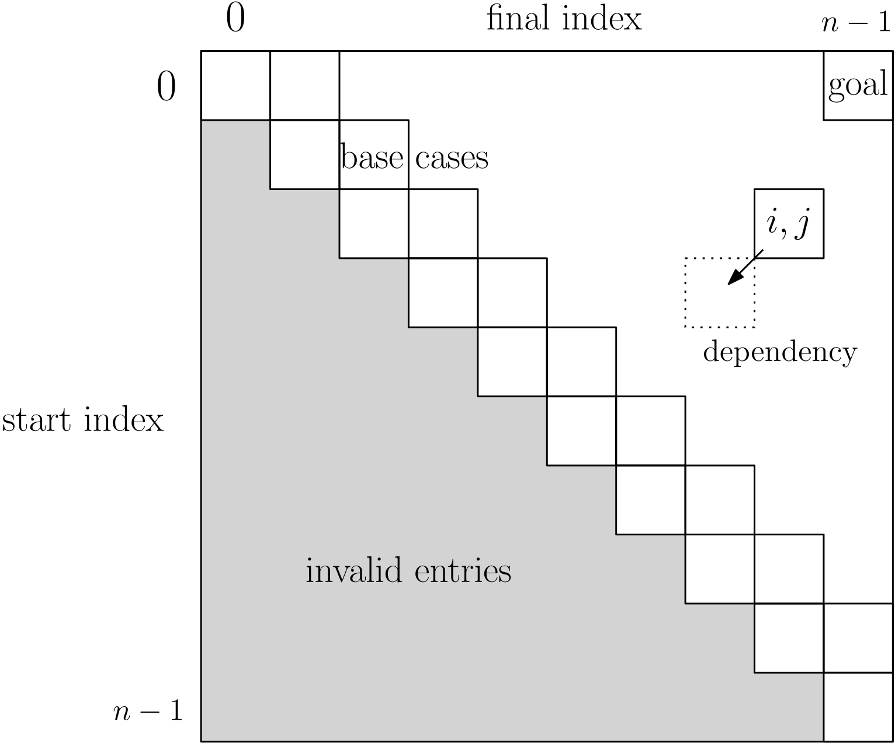

Return to the blog's main page.
Breaking Down Dynamic Programming
Introduction
When I was a TA for "Algorithm Design and Analysis", the students struggled with dynamic programming. To simplify/demystify it, I tried to break it down into a logical sequence of steps, each of which should not feel too intimidating on its own. This is explained in detail here. To complement the explanations, there are links to problems on leetcode.com, in case the reader wants to practice. The code snippets are in Python, but Leetcode accepts most popular languages.
Overview: Recursive vs Iterative DP
In short, dynamic programming (DP) is a technique for problems that seem hard to solve as a whole, but become easy if we know the solution to smaller subproblems. More technically, we can use it in problems where the (value of the) solution can be expressed as an equation which is a function of the input, and is expressed in terms of itself with smaller inputs. This is called a recurrence equation. The classic example is the Fibonacci recurrence: Fib(n) = Fib(n-1) + Fib(n-2).
A recurrence equation can be translated into code:
def Fib(n):
if n == 0 or n == 1:
return 1
return Fib(n-1) + Fib(n-2)However, the above function has an exponential runtime. A recursive function becomes exponential when it is possible to reach the same subcall through different execution paths. In the Fibonacci case, we have the following nested calls: Fib(n) -> Fib(n-1) -> Fib(n-2), and Fib(n) -> Fib(n-2). Since Fib(n-2) is called twice all the work from this call is duplicated, which in turn means that subcalls made from Fib(n-2) will start to duplicate and grow exponentially.
Dynamic programming is simply a workaround to this duplication issue. Instead of recomputing the solutions of the subproblems, we store them and then we recall them as needed. This guarantees that each subproblem is computed only once.
There are two main approaches for DP.
Recursive / Top-down DP
We start with the code which is a literal translation of the recurrence equation, but then we add a dictionary / hash table to store results.
memo = {}
def Fib(n):
if n == 0 or n == 1:
return 1
if n in memo:
return memo[n]
res = Fib(n-1) + Fib(n-2)
memo[n] = res
return resThere are three changes in the code above:
- declaring our dictionary for storing results,
memooutside the recursive function (memo comes "memorization" or "memoization", a name used in the literature). - before computing the result, we check if the solution has already been computed. This check can be done before or after the base case.
- before returning, we save the result in the
memotable.
Using a memoization table in this way solves the inefficiency (we will go deeper into the analysis part later).
Iterative / Bottom-up DP
Instead of starting from the largest input and recursively reaching smaller subproblems, we can directly compute the subproblems from smallest to largest. This way, we already have the solutions to the subproblems when we need them. For this approach, we change the dictionary for an array/vector, and we change recursive calls for a for loop.
def Fib(n):
if n == 0: return 1
memo = [0 for i in range(n+1)]
memo[0], memo[1] = 1, 1
for i in range(2, n+1):
memo[i] = memo[i-1] + memo[i-2]
return memo[n]Most problems can be solved with both recursive and iterative DP. Here are some considerations for how to choose:
- Recursive DP matches the recurrence equation more directly, so it can be easier to implement.
- Both have the same runtime complexity, but the recursive version will generally have larger constant factors due to all the recursive function calling and due to using a hash table instead of an array.
- Iterative DP often allows for an optimization to reduce the space complexity (discussed later).
Recursive DP in 5 Steps
- Choose what your subproblems are.
- Find the recurrence equation.
- Translate the recurrence equation into recursive code.
- Add memoization.
- (Optional) Reconstruct the solution.
We already saw steps 1–4 with the Fibonacci example. Now, we will walk through all the steps in more detail using a more complicated example, the longest common subsequence problem:
Given two strings s1 and s2, find the length of the longest string which is a subsequence of both s1 and s2. A string t is a subsequence of a string s if every char in t appears in order in s, but are not necessarily contiguous. For example, abc is a subsequence of axbyz, but ba is not (do not confuse subsequence with substring or subset).
Step 1: choose our subproblems. This varies from problem to problem, but when the input to the problem is a string, a natural way to obtain smaller problems is to look at shorter strings. Here we can use as a subproblem a prefix of s1 and a prefix of s2.
Some notation: let n be the length of s1 and m the length of s2. Let LCS(i,j) be the solution for the LCS problem for the prefix of s1 of length n (s1[0..i-1]) and the prefix of s2 of length m (s2[0..j-1]). Then, our goal is to find LCS(n, m).
Step 2: find the recurrence equation. Now we need to come up with an expression for LCS(i,j) as a function of LCS with smaller indices (as well as a base case). This is the hardest step of DP, and often it is here that we realize that we chose bad subproblems in Step 1. If that happens, hopefully we will discover some hint for what our subproblems should be.
In order to derive the recurrence equation for LCS, we need the following observation: if the two strings end with the same character c, then, to maximize the length of the subsequence, it is "safe" to add c to the subsequence. In contrast, if both strings end with different characters, then at least one of them cannot appear in the subsequence. The complication is that we do not know which one. Thus, instead of guessing, we can simply consider both options.
This observation yields the recurrence equation (excluding base case):
LCS(i, j) = 1 + LCS(i-1, j-1) if s[i] == s[j]
max(LCS(i, j-1), LCS(i-1, j)) otherwiseThis step is not intuitive at first, and requires practice. After having done a few problems, one starts to recognize the typical patterns in DP. For instance, using max among a set of options of which we do not know which one is the best is easily the most common pattern in DP.
Step 3. Translate the recurrence equation into recursive code. This step is a very simple programming task. Pay attention to the base case.
#outer call:
LCS(len(s1), len(s2))
def LCS(i, j):
if i == 0 or j == 0:
return 0
if s1[i-1] == s2[j-1]:
return 1 + LCS(i-1, j-1)
else:
return max(LCS(i, j-1), LCS(i-1, j))If we draw the few first steps of the call graph, we will see that the same subproblem is reached twice. Thus, call graph blows up, leading to an exponential runtime.
Step 4. Add memo table. This step should be automatic: one does not even need to understand the previous code in order to add the memo table.
#outer call:
memo = {}
LCS(len(s1), len(s2))
def LCS(i, j):
if i == 0 or j == 0:
return 0
if (i,j) in memo:
return memo[(i,j)]
if s1[i-1] == s2[j-1]:
res = 1 + LCS(i-1, j-1)
else:
res = max(LCS(i, j-1), LCS(i-1, j))
memo[(i,j)] = res
return resThe base case corresponds to when one of the strings is empty. The LCS of an empty string with another string is clearly an empty string.
Incidentally, if we flip the check on the memo table, the code becomes a bit more streamlined (fewer lines + merging the two returns). I prefer this form (it does the same):
def LCS(i, j):
if i == 0 or j == 0:
return 0
if (i,j) not in memo:
if s1[i-1] == s2[j-1]:
memo[(i,j)] = 1 + LCS(i-1, j-1)
else:
memo[(i,j)] = max(LCS(i, j-1), LCS(i-1, j))
return memo[(i,j)]We have eliminated the exponential blowup. In general, DP algorithms can be analyzed as follows: # of distinct subproblems times time per subproblem excluding recursive calls. For LCS, we get O(nm)*O(1)=O(nm).
Step 5. Reconstruct the solution.
We used DP to compute the length of the LCS. What if we want to find the LCS itself?
A naive way to do it would be to store the entire result of each subproblem in the memoization table instead of just its length. While this works, it is clear that it will require a lot of memory to store O(nm) strings of length O(min(n,m)) each. We can do better.
Step 5, "Reconstruct the solution", is how to reuse the table that we constructed in Step 4 to find the actual solution instead of just its length. I said that this step is optional because sometimes we just need the value of the solution, so there is no reconstruction needed.
The good news is that we do not need to modify the code that we already wrote in Step 4. The reconstruction is a separate step that comes after. In addition, the reconstruction step is very similar (follows the same set of cases) as the step of building the memo table. In short, we use the memo table as an "oracle" to guide us in our choices. Based on the values in the memo table, we know which option is better, so we know how to reconstruct the solution.
#outer calls
memo = {}
n, m = len(s1), len(s2)
LCS(n, m) #build memo table
sol = reconstructLCS(n, m)
def reconstructLCS(i, j):
if i == 0 or j == 0:
return ""
if s1[i-1] == s2[j-1]:
return reconstructLCS(i-1, j-1) + s1[i-1]
elif memo[(i-1,j)] >= memo[(i,j-1)]:
return reconstructLCS(i-1, j)
else:
return reconstructLCS(i, j-1)In the code above, first we run LCS(n,m) to fill the memo table. Then, we use it in the reconstruction. The condition memo[(i-1,j)] >= memo[(i,j-1)] tells us that we can obtain a longer or equal LCS by discarding a char from s1 instead of from s2.
Note that there is a single recursive call in the reconstruction function, so the complexity is just O(n+m).
Iterative DP in 6 Steps
- Choose what your subproblems are.
- Find the recurrence equation.
- Design the memo table.
- Fill the memo table.
- (Optional) Reconstruct the solution.
- (Optional) Space optimization.
The new/different steps are highlighted. Step 3. is to design the layout of the table/matrix where we are going to store the subproblem solutions. There is no coding in this step. By "design", I mean making the following choices:
- what are the dimensions of the table, and what does each index mean. Generally speaking, the table should have one dimension for each parameter of the recurrence equation. In the case of LCS, it will be a 2-dimensional table.
- where are the base cases.
- where is the cell with the final solution.
- what is the ``dependence relationship'' between cells (which cells do you need in order to compute each cell).
- which cells do not need to be filled (in the case of LCS, we need them all).
Here is how I would lay out the table for LCS (you can find a different layout in the problems below):
Next (Step 4), we fill the memo table with a nested for loop. If the layout is good, this should be easy. Before the main loop, we fill the base case entries. Then, we must make sure to iterate through the table in an order that respects the dependencies between cells. In the case of LCS, we can iterate both by rows or by columns.
We obtain the following algorithm:
def LCS(s1, s2):
n, m = len(s1), len(s2)
memo = [[0 for j in range(m+1)] for i in range(n+1)]
for i in range(1, n+1):
for j in range(1, m+1):
if s1[i-1] == s2[j-1]:
memo[i][j] = 1 + memo[i-1][j-1]
else:
memo[i][j] = max(memo[i-1][j], memo[i][j-1])
return memo[n][m]In the code above, the base case entries are filled implicitly when we initialize the table with zeros everywhere.
If we need to reconstruct the solution, we can do it in the same way as for the recursive DP. The only difference is that memo is a matrix instead of dictionary.
Space optimization
Clearly, the space complexity of iterative DP is the size of the DP table. Often, we can do better. The idea is to only store the already-computed table entries that we will use to compute future entries. For instance, in the case of Fibonacci, we do not need to create an entire array—keeping the last two numbers suffice. IN the case of a 2-dimensional DP table, if we are filling the DP table by rows and each cell only depends on the previous row, we only need to keep the last row (and similarly if we iterated by columns). Here is the final version for LCS where we improve the space complexity from O(nm) to O(n+m):
def LCS(s1, s2):
n, m = len(s1), len(s2)
lastRow = [0 for j in range(m+1)]
for i in range(1,n+1):
curRow = [0 for j in range(m+1)]
for j in range(1,m+1):
if s1[i-1] == s2[j-1]:
curRow[j] = 1 + lastRow[j-1]
else:
curRow[j] = max(lastRow[j], curRow[j-1])
lastRow = curRow
return lastRow[m]Note: this optimization is incompatible with reconstructing the solution, because that uses the entire table as an "oracle".
DP Patterns
Here are some typical patterns:
For Step 1. The subproblems.
- If the input is a string or a list, the subproblems are usually prefixes or substrings/sublists, which can be specified as a pair of indices.
- If the input is a number, the subproblems are usually smaller numbers.
- Generally speaking, the number of subproblems will be linear or quadratic on the input size.
For Step 2. The recurrence equation.
- Often, we use
maxorminto choose between options, or sum to aggregate subsolutions. - The number of subproblems is most often constant, but sometimes it is linear on the subproblem size. In the latter case, we use an inner loop to aggregate/choose the best solution.
- Sometimes, the recurrence equation is not exactly for the original problem, but for a related but more constrained problem. See an example below, "Longest Increasing Subsequence".
Practice Problems
Here are some practice problems showcasing the patterns mentioned above. Follow the Leetcode links for the statements and example inputs. I jump directly to the solutions. I'd recommend trying to solve the problems before checking them.
Here, the goal is to count the number of substrings of a string s which are palindromic. There is a trivial O(n^3) time solution without DP:
def countSubstrings(s):
n = len(s)
count = 0
for i in range(n):
for j in range(i, n):
if isPalindrome(s[i:j+1]):
count += 1
return countWe can improve this to O(n^2) with DP. The subproblems are all the substrings of s. Let Pal(i, j) be true iff s[i..j] is a palindrome. We have the following recurrence equation (excluding base cases):
Pal(i, j) = false if s[i] != s[j],
Pal(i+1, j-1) otherwiseBased on this recurrence equation, we can design the following DP table:

This type of "diagonal" DP tables are very common when the subproblems are substrings/sublists. In this case, the base cases are substrings of length 1 or 2. The goal is Pal(0,n-1).
Given the dependency, the table can be filled by rows (starting from the last row), by columns (starting each column from the bottom), or by diagonals (i.e., from shortest to longest substrings). In the code below, I illustrate how to fill the table by diagonals.
def countSubstrings(s):
n = len(s)
T = [[False for j in range(n)] for i in range(n)]
for i in range(n):
T[i][i] = True
for i in range(n-1):
T[i][i+1] = s[i] == s[i+1]
for size in range(2, n+1):
for i in range(0,n-size):
j = i + size
T[i][j] = s[i] == s[j] and T[i+1][j-1]
count = 0
for row in T:
for val in row:
if val:
count += 1
return countHere, a subproblem can be a grid with reduced width and height. Let T[i][j] be the cheapest cost to reach cell (i,j). The goal is to find T[n-1][m-1], where n and m are the dimensions of the grid. The base case is when either i or j are zero, in which case we do not have any choices for how to get there. In the general case, we have the recurrence equation T[i][j] = grid[i][j] + min(T[i-1][j], T[i][j-1]): to get to (i,j), we first need to get to either (i-1,j) or to (i,j-1). We use min to choose the best of the two. We convert this into an iterative solution:
def minPathSum(grid):
n, m = len(grid), len(grid[0])
T = [[0 for j in range(m)] for i in range(n)]
T[0][0] = grid[0][0]
for i in range(1, n):
T[i][0] = grid[i][0] + T[i-1][0]
for j in range(1, m):
T[0][j] = grid[0][j] + T[0][j-1]
for i in range(1, n):
for j in range(1, m):
T[i][j] = grid[i][j] + min(T[i-1][j], T[i][j-1])
return T[n-1][m-1]This is similar to the previous problem, but we need to accumulate the solutions to the subproblems, instead of choosing between them. Problems about counting solutions can often be solved with DP.
This problem will illustrate a new trick: if you cannot find a recurrence equation for the original problem, try to find one for a more restricted version of the problem which nevertheless you enough information to compute the original problem.
Here, the input is a list L of numbers, and we need to find the length of the longest increasing subsequence (a subsequence does not need to be contiguous). Again, the subproblems correspond to prefixes of the list.
Let LIS(i) be the solution for the prefix of length i (L[0..i]). The goal is to find LIS(n-1), where n is the length of L.
However, it is not easy to give a recurrence equation for LIS(i) as a function of smaller prefixes. In particular, the following is wrong (I will let the reader think why):
LIS(i) = LIS(i-1) + 1 if L[i] > L[i-1],
LIS(i-1) otherwiseThus, we actually give a recurrence equation for a slightly modified type of subproblems: let LIS2(i) be the length of the LIS ending at index i. This constraint makes it easier to give a recurrence equation:
LIS2(i) = 1 + max(LIS2(j)) over all j < i such that L[j] < L[i]In short, since we know that the LIS ends at L[i], we consider all candidate predecessors, which are the numbers smaller than it, and get the best one by using max. Crucially, this recurrence works for LIS2(i) but not for LIS(i).
Here is a full solution:
def LIS(L):
n = len(L)
T = [0 for i in range(n)]
T[0] = 1
for i in range(1, n):
T[i] = 1
for j in range(0, i):
if L[j] < L[i]:
T[i] = max(T[i], T[j] + 1)
return max(T)At the end, we do not simply return T[n-1] because T is the table for LCS2, not LCS. We return max(T) because the LCS must end somewhere, so LCS(n-1) = LCS2(j) for some j < n.
Note that the runtime is O(n^2) even though the table has linear size. This is because we take linear time per subproblem.
A harder version of the previous problem. A similar approach works. First solve the LIS problem as before, and then do a second pass to count the solutions.
This problem is similar to LCS, and it requires reconstruction.
I should mention that not every problem that can be solved with DP fits into the mold discussed above. Despite that, it should be a useful starting framework. Here are many more practice problems:
Return to the blog's main page.